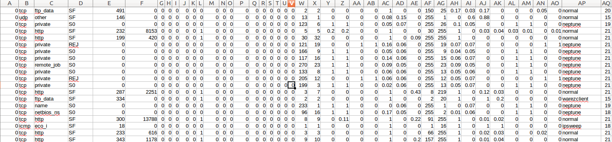
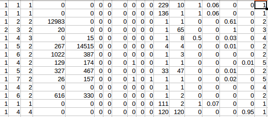
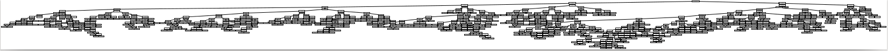
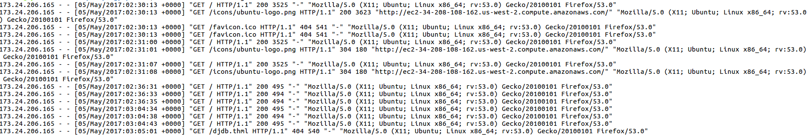
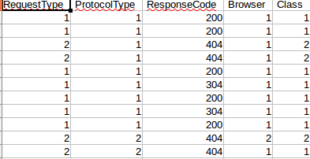

We used NSL-KDD Dataset and developed a Decision Trees based classifier to classify data into Normal requests and Intrusion Requests.
Similar features in the data were discarded, as they provide no concrete evidence of intrusion.
Original data looked like :
Modified data looked like :
Decision Tree made :
Accuracy Obtained with training data: 99.97%
Confusion Matrix :
[[67329 14]
[ 15 58615]]
Accuracy Obtained with test data: 78.75%
Confusion Matrix :
[[9261 449]
[ 4340 8493]]
We further applied various machine learning algorithms to obtain the following results:
Neural Network Accuracy on Training Data: 0.248981924698 Confusion Matrix: [[28000 39343] [55265 3365]] Neural Network Accuracy on Test Data: 0.389344807701 Confusion Matrix: [[4431 5279] [8487 4346]] Decision trees Accuracy on Training Data: 0.99976979194 Confusion Matrix: [[67329 14] [ 15 58615]] Decision trees Accuracy on Test Data: 0.778867054074 Confusion Matrix: [[9264 446] [4539 8294]] KNN(5) Accuracy on Train Data: 0.997848745366 Confusion Matrix: [[67255 88] [ 183 58447]] KNN(5) Accuracy on Test Data: 0.800692010824 Confusion Matrix: [[9372 338] [4155 8678]] GaussianNB Accuracy on Train Data: 0.532701451898 Confusion Matrix: [[67016 327] [58540 90]] GaussianNB Accuracy on Test Data: 0.430200062104 Confusion Matrix: [[ 9694 16] [12829 4]] Logistic reg_logression Accuracy on Train Data: 0.872194835401 Confusion Matrix: [[64100 3243] [12857 45773]] Logistic reg_logression Accuracy on Test Data: 0.66747992725 Confusion Matrix: [[9017 693] [6803 6030]] Classifier 1 on Train Data: 0.923991649004 Confusion Matrix: [[67316 27] [ 9548 49082]] Classifier 1 on Test Data: 0.712504990463 Confusion Matrix: [[9528 182] [6299 6534]]
We further implemented our model on AWS logs.
AWS logs look like:
Generated Data looks like:
